A poster for the Ghent Art Book Fair. Made at LUCA School of Arts Ghent in 2015-16.
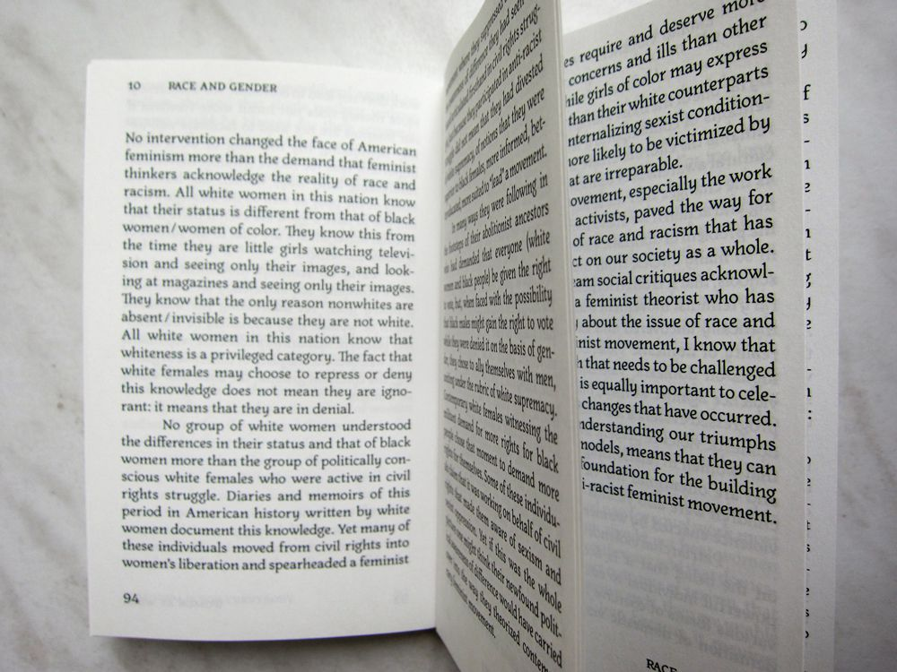
New design of Feminism is for Everybody from bell hooks, part of a series that is still being developed. Made at LUCA School of Arts Ghent in 2015-16.
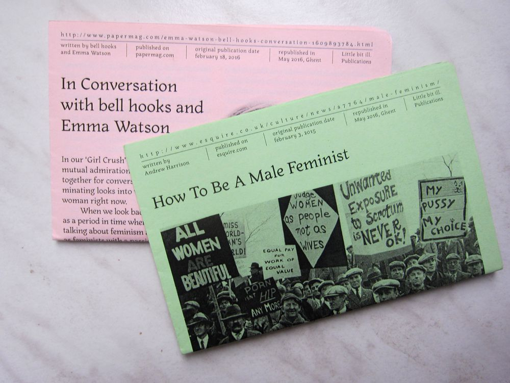
Papers with one artikle, part of a series that is still being developed. Made at LUCA School of Arts Ghent in 2015-16.
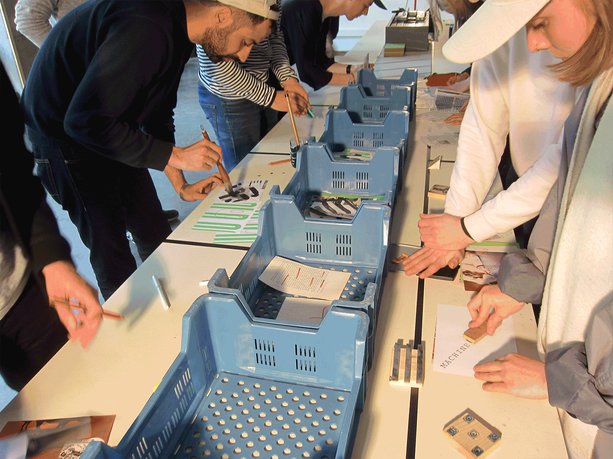
Book Making Machine, a production line for making books. In collaboration with Victor Van Wassenhove, 2016.
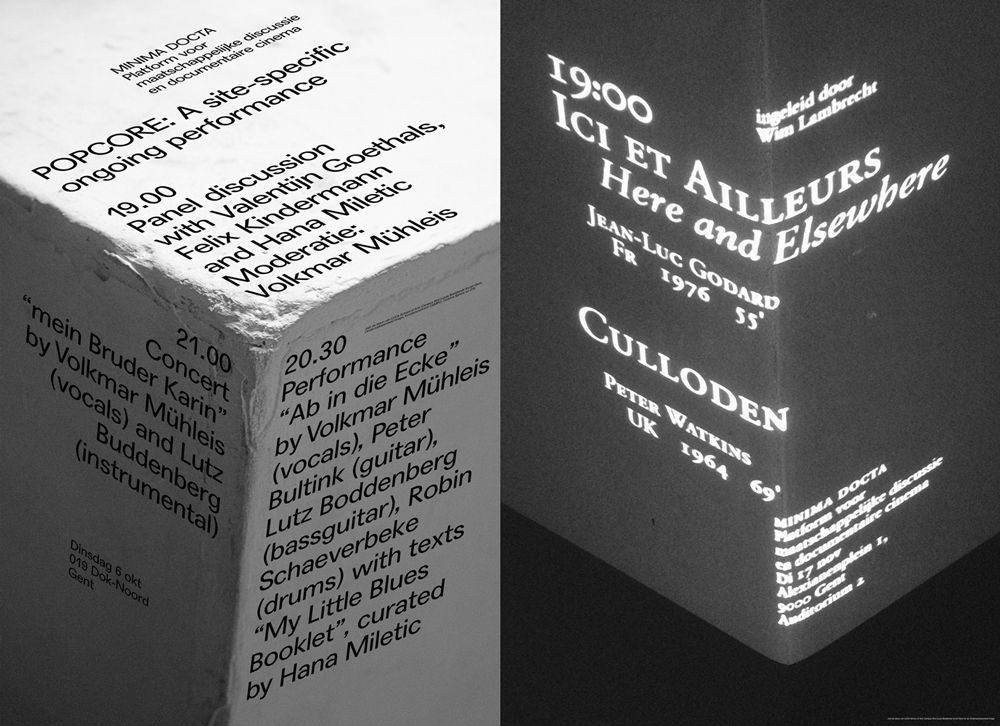
A poster for a three-part performance night and one for a double movie screening. Made at LUCA School of Arts Ghent in 2015-16.
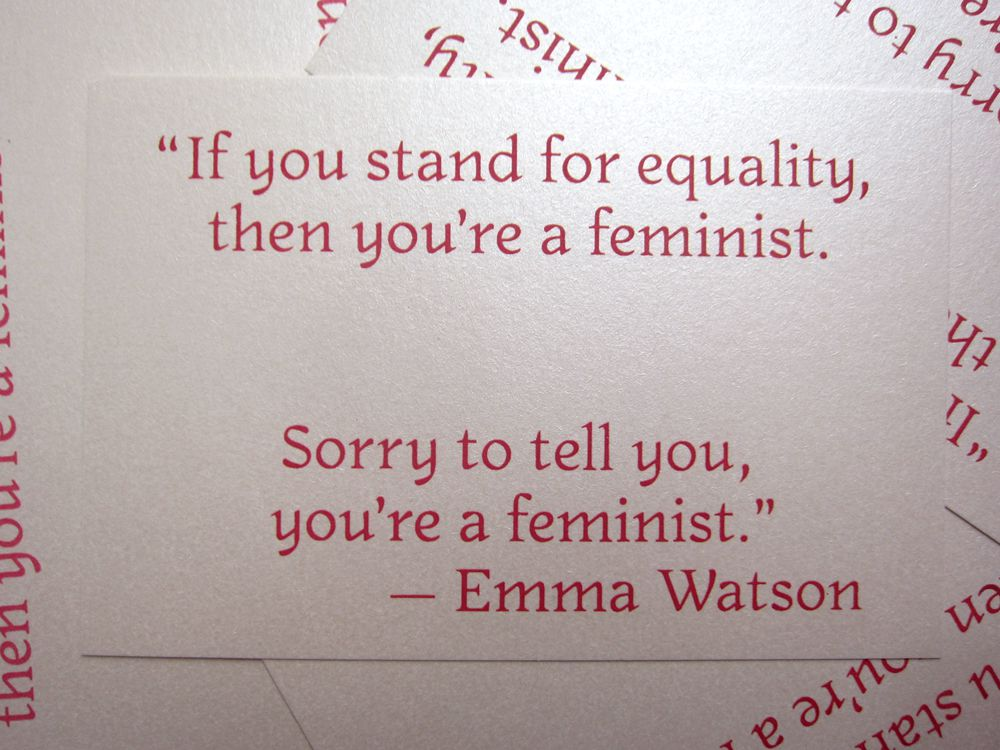
Silkscreenprinted postcards, 2016.
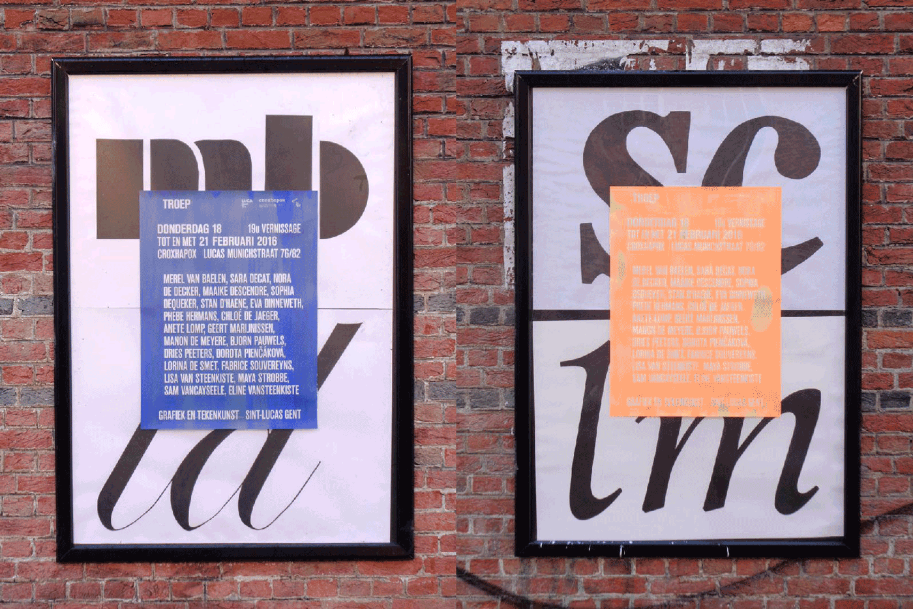
Silkscreen-printed posters, invitations and flyers for TROEP, an exhibition of Grafic and Illustration LUCA School of Arts Ghent. In collaboration with Victor Van Wassenhove, 2016.
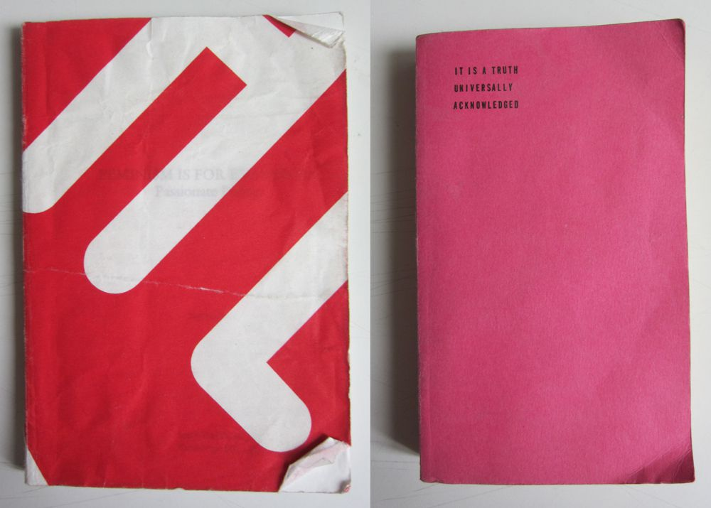
Rebound books, made at Publication Studio Rotterdam, 2016.
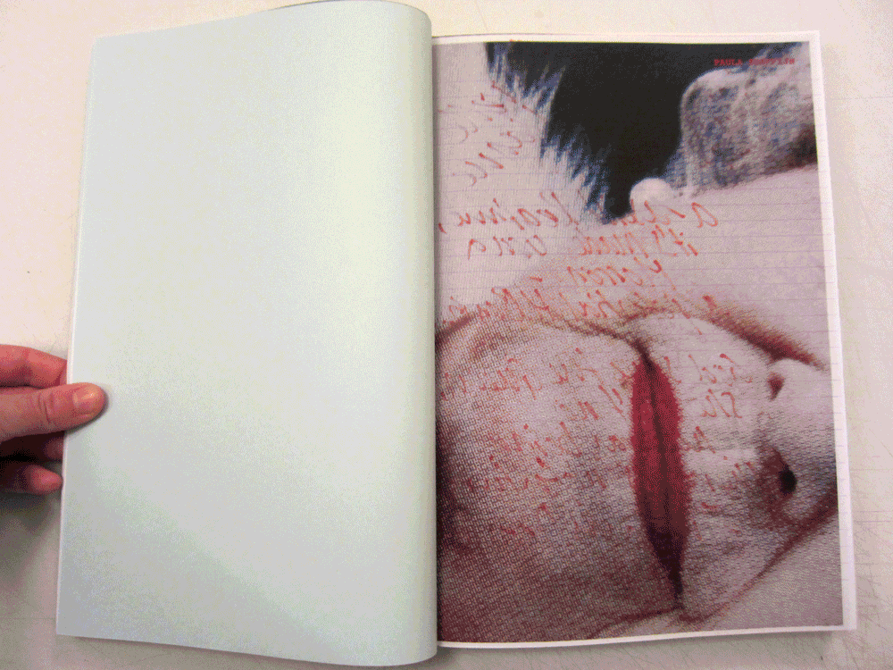
Bijdragen aan een vriendenboek, beantwoord op de vragen wat is je favoriete muziek, favoriete object, denkbeeldige vriend, favoriete cocktail en favoriete einde. Gemaakt aan LUCA School of Arts Gent 2015-16.
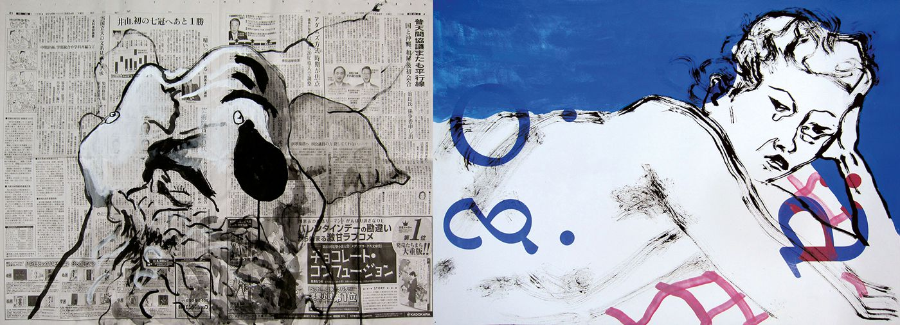
Live drawings made at LUCA School of Arts Ghent in 2015-16.
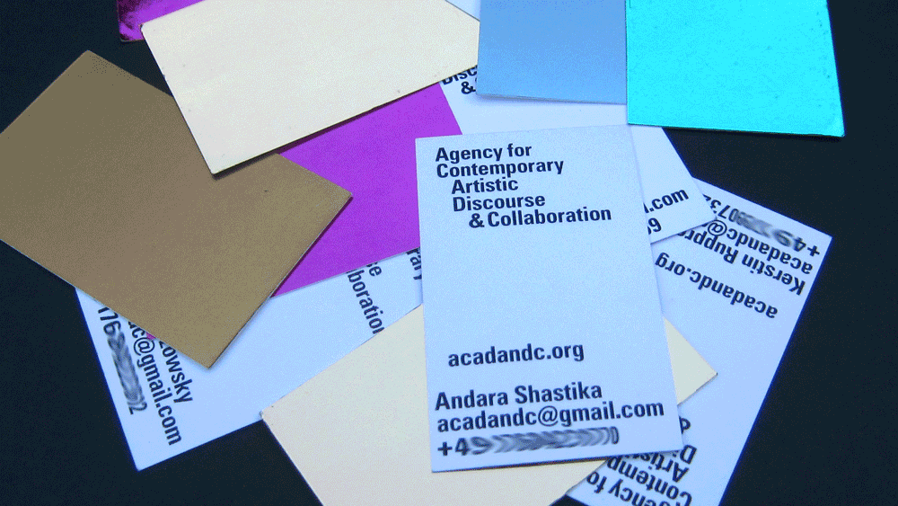
Cards for Agency for Contemporary Artistic Discourse & Collaboration made in 2015 in Kassel.
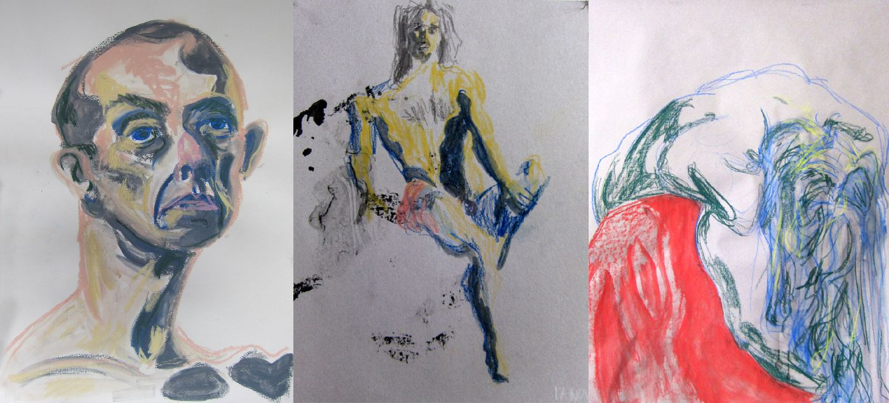
Live drawings made at LUCA School of Arts Ghent in 2014-15.
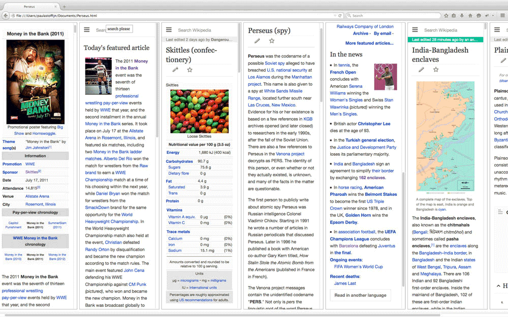
Website inspired by the Greek mythology of Perseus. Made at LUCA School of Arts Ghent in 2014-15.
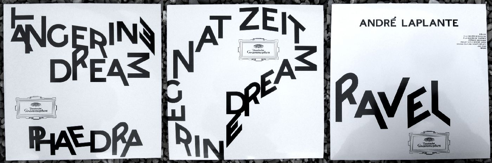
LP covers for Tangerine Dream and Andre Laplante. The typeface is altered to visualize the spaciousness of the music. Made at LUCA School of Arts Ghent in 2014-15.
Cetacea et Cetera, a wunderkammer as a book. About structures, patterns, underwater live etcetera. Made at LUCA School of Arts Ghent in 2014-15.
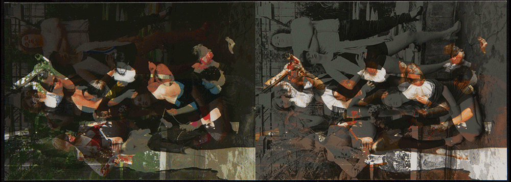
Flyer for Ontroerend Goed made in Antwerp in 2014.
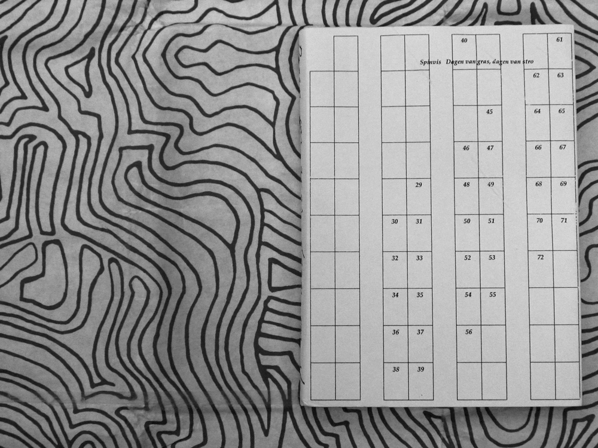
Dagen van gras, dagen van stro, the song ‘Dagen van gras, dagen van stro’ of Spinvis interpreted as a book. Made at the Royal Academy for Fine Arts in Antwerp in 2013-14.
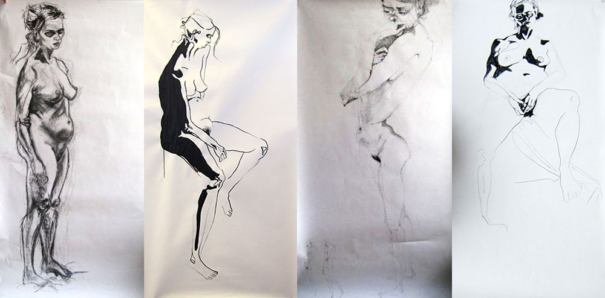
Live drawings made at the Royal Academy for Fine Arts in Antwerp in 2013-14.